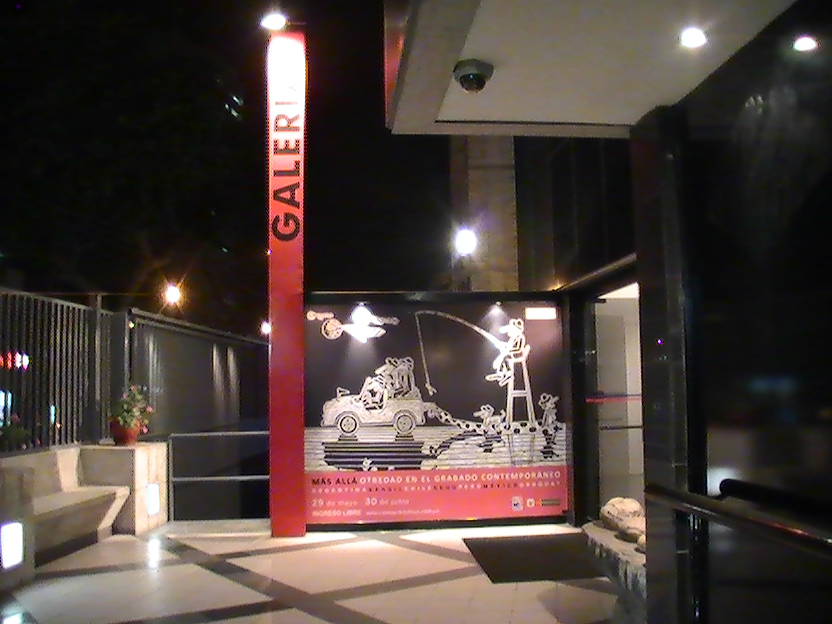
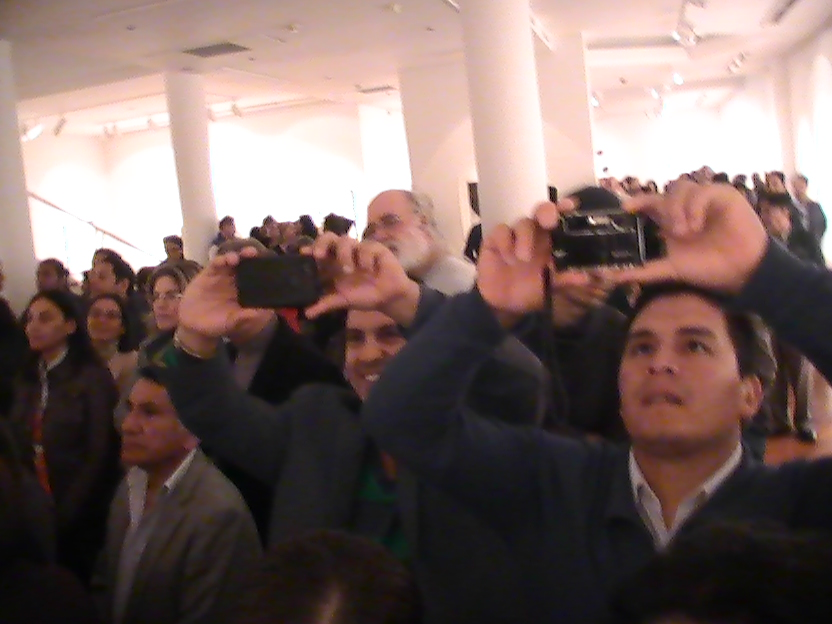
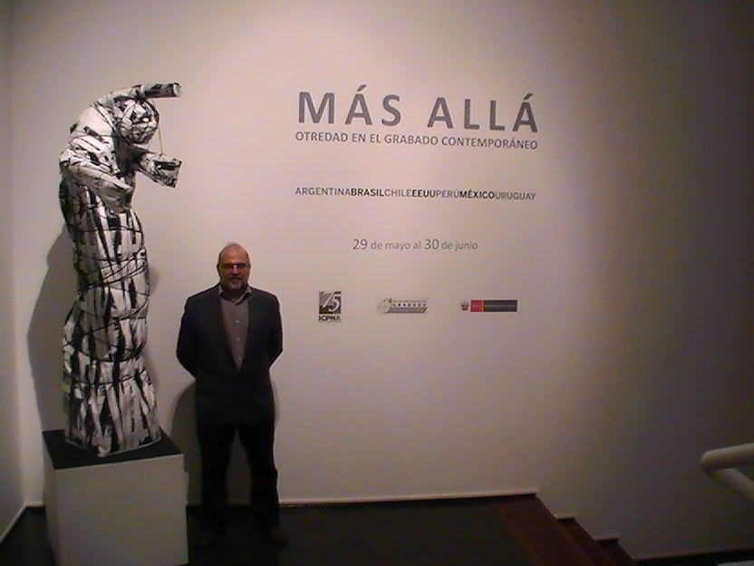

"Homenagem ao Cheida"
Veja: Exposição surpresa de alunos e ex alunos do Prof. Dr. Paulo Cheida Sans, organizada pelos alunos de Artes Visuais da PUC-Campinas (formandos 2013), para homenagear o grande mestre. "Homenagem ao Cheida" foi inaugurada no dia 10 de dezembro de 2012 sem que Paulo Cheida soubesse. Confira sua reação, imagens da abertura e as obras produzidas tendo como base e inspiração a produção artística de Cheida.
Paulo Cheida Sans é artista plástico, curador e professor. Fundou, juntamente com sua esposa também artista plástica, Celina Carvalho, o Museu Olho Latino.
Como artista plástico, Cheida já recebeu mais de quarenta prêmios em Salões de Arte e outras tantas distinções, inclusive o título de Comendador que lhe fora outorgado na década de 80. Premiado nos Estados Unidos, França e Portugal, tem se destacado na área cultural como artista plástico, curador, agente cultural e filósofo da arte. Participou de importantes Bienais de Gravura no Japão, Finlândia, Egito, Polônia, Porto Rico e em muitos outros países.
Obras de sua autoria estão inseridas em importantes acervos no Brasil e no exterior, como no Museu de Arte Contemporânea da Universidade de São Paulo - São Paulo, SP; Museu de Arte de Santa Catarina - Florianópolis, SC; Museu de Arte de Brasília - Brasília, DF; Museu de Arte Contemporânea do Paraná, Curitiba, PR; Centre of Fine Arts -- Nehal, Egito; Université Laval - Québec, Canadá; Tama Art University - Tóquio, Japão; Casa de Las Américas - La Habana, Cuba; Casa de Humor e Sátira - Gabrovo, Bulgária e Museu Nacional de Belas Artes - Santiago, Chile.
Além de artista plástico, Cheida também é autor de vários livros, como "Pedagogia do Desenho Infantil" (Alínea), "Fundamentos para o Ensino das Artes Plásticas" (Alínea), "A Criança e o Artista" (Papirus); e organizador de outros, como "Gravura: Contexto Atual" (Arte Ed.) e "Coletânea de Arte e Cultura da América Latina" (Olho Latino).
AGRADECIMENTOS:
Ana Lívia Vidal, Henrique Padovan Lira, Isabella Lião, João Alves, Larissa Siqueira, Luciene Carvalho Sans, a todos os expositores da mostra "Homenagem ao Cheida",
à Direção da Faculdade de Artes Visuais, aos alunos , professores e funcionários
do Curso de Artes Visuais - PUC-Campinas
Exposição: "Homenagem ao Cheida"
Expositores:
Alessandra Kamimura, Ana Lívia Vidal, André Calejon, Andréia Dulianel, Andrey Carmo, Beatriz Valeriano, Bruna Dolenc, Bruno Benetel, Bruno Guimarães, Caio Marcatto, Camila Lagoeiro, Carolina Santos, Cristiano Rodrigues, Fábio Vieira, Fernanda Ferreira, Fernando Tetsuo, Flávia Silva, Francielle Campana, Giovana Brasil, Gustavo Araujo, Henrique Padovan Lira, João Alves, João Paulo Barrionuevo, Larissa Siqueira, Leonardo Camargo, Madeline Silva, Natália Wolf, Reinaldo Gavilan de Arruda, Roberta Rabelo, Tiago Grion, Tiago Rego, Victor Tosi Hunger, Wagner Galesco, Yohan Pardin Pavan.
Entrevista: Paulo Cheida fala sobre a mostra "Elogios" - Homenagem a Renato Russo
Renato Russo faleceu em 1996, foi um cantor e compositor brasileiro, célebre por ter sido o vocalista e fundador da banda de rock Legião Urbana. Antes de fundar o grupo, Renato integrou o conjunto musical Aborto Elétrico. Como integrante da Legião Urbana, Russo lançou oito álbuns de estúdio, cinco álbuns ao vivo, alguns lançados postumamente, e diversos singles.

Algumas obras foram inspiradas nas “Leis do Universo”, no sentido cósmico e espiritual, visando o bem comum da humanidade. Para o curador da mostra, prof. Dr. Paulo Cheida, a mostra reúne uma turma muito especial no decorrer da existência do Curso de Artes Visuais da PUC-Campinas por ter ao mesmo tempo vários alunos artistas com talento.
Cheida observa que a exposição nos leva à reflexão sobre a nossa existência e cita a frase da expositora Ana Elisa Montevecchio como motivação para o entendimento das obras expostas: “dentro do pequeno está o grande e nada cabe em si, pois está no infinito”.
Participam da mostra os seguintes expositores: Alex Costa, Ana Elisa Montevecchio , Ana Luísa Pitton Cuelbas, Beatriz Valeriano, Bruna Dolenc, Bruno Taliani Fernandes, Elaine C. de Jesus, Fábio Vieira, Gabriela Uehbe, Gabriela Sala, Gilson Correa, Isabella de Lião, Jediel Oliveira, Kasmirra Robaina, Lari Leite, Leonardo Camargo, Maira Bortoleto, Mariana Scarazzatti, Matheus Reis, Nicole S. Favareto, Riciela Morelli Ribeiro e Tila Barrionuevo.
Na abertura, os expositores Ana Luísa Pitton Cuelvas e Mathesus Reis fizeram uma apresentação musical lembrando algumas músicas do Renato Russo que serviram de inspirações para a realização da mostra.
A exposição integra as comemorações dos 100 anos de aniversário do Tênis Clube de Campinas e conta com o apoio do Museu Olho Latino e da Faculdade de Artes Visuais – CLC – da PUC-Campinas. A mostra poderá ser visitada na Galeria do Clube até 05 de janeiro de 2014, diariamente, das 10h às 17h, à Rua Cel. Quirino, 1346, Cambuí, em Campinas.
(clique na imagem para ampliar)

Exposição: “Elogios” – Homenagem a Renato Russo e às Leis do Universo
Curadoria: Paulo Cheida Sans
Expositores: Alex Costa, Ana Elisa Montevecchio , Ana Luísa Pitton Cuelbas, Beatriz Valeriano, Bruna Dolenc, Bruno Taliani Fernandes, Elaine C. de Jesus, Fábio Vieira, Gabriela Uehbe, Gabriela Sala, Gilson Correa, Isabella de Lião, Jediel Oliveira, Kasmirra Robaina, Lari Leite, Leonardo Camargo, Maira Bortoleto, Mariana Scarazzatti, Matheus Reis, Nicole S. Favareto, Riciela Morelli Ribeiro e Tila Barrionuevo.
Abertura: 10 de dezembro, às 20h.
Período da mostra: 10 de dezembro de 2013 a 05 de janeiro de 2014.
Local: Galeria de Arte “Geraldo Jursengen” do Tênis Clube de Campinas.
Endereço: Rua Cel. Quirino, 1346, Cambuí – Campinas, SP.
Telefone: (19) 3721-6880.
Realização: Diretoria Cultural Tênis Clube de Campinas.
Apoio: Faculdade de Artes Visuais – CLC – da PUC-Campinas e Museu Olho Latino
por: Luciene Sans - Assessoria de Impresa Olho Latino
Paulo Cheida Sans na IV Bienal Internacional de Grabado - ICPNAVídeo que mostra a participação do artista, curador e professor Paulo Cheida Sans na "IV Bienal Internacional de Grabado" do Instituto Cultural Peruano Norte-Americano (ICPNA). Paulo Cheida foi um dos conferencistas e é um dos artistas da mostra "Más Allá", exposta até 30 de junho de 2013, em Lima, Peru.
Paulo Cheida é destaque no PeruPaulo Cheida Sans é um dos principais destaques da “IV Bienal Internacional de Grabado”, realizada pelo Instituto Cultural Peruano Norte Americano em Lima, Peru.
 

   |
- "Fronteras Nómades II" - Cusco, Peru
- Paulo Cheida recebe Troféu Destaque de melhor artista plástico do interior do Estado de São Paulo
- Paulo Cheida Sans é curador e expositor de mostra em La Paz, Bolívia
- Paulo Cheida Sans expõe pinturas e esculturas no Lugar Pantemporâneo em São Paulo
- Palestra em Campinas, SP, dia 27 de agosto